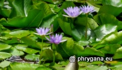

")
")
| Phrygana: la Nature en Crète principalement, mais aussi d'ailleurs ... |
|  |
|
|
| Nymphaea nouchali | Dasineura irregularis | Dione juno |
| Espèces: 1516--- Faune: 584 -- Flora: 903 -- Galles (Bacteria): 2 -- Champignons: 26 -- Lichens: 1 | |||||
| Nouveautés | |||||
| Flora: | Caesalpinia pulcherrima | Fauna: | Vespa velutina | Fungi: | Coprinus atramentarius |
| Fauna: |
Rhaphigaster nebulosa
| Flora: |
Musa x paradisiaca |
Flora: |
Glechoma hederacea |
|
| Flor: | Decalobanthus peltatus | Flora: | Colocasia esculenta | Flora: | Forsythia x intermedia |
| 20 octobre 2024 |